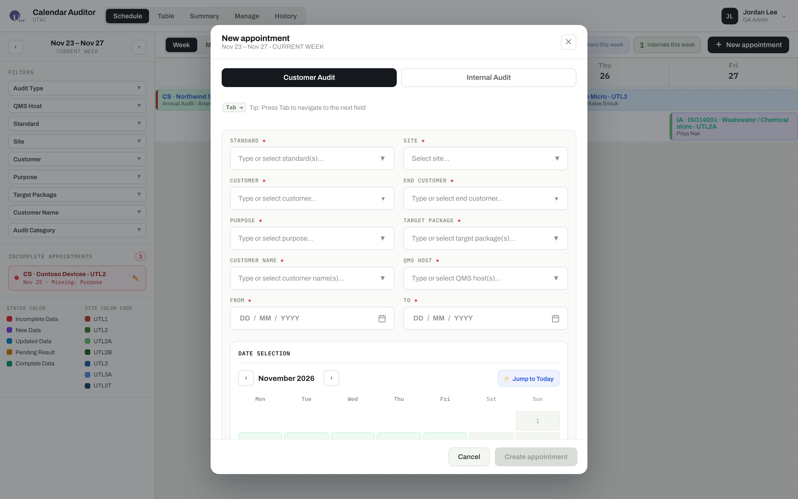
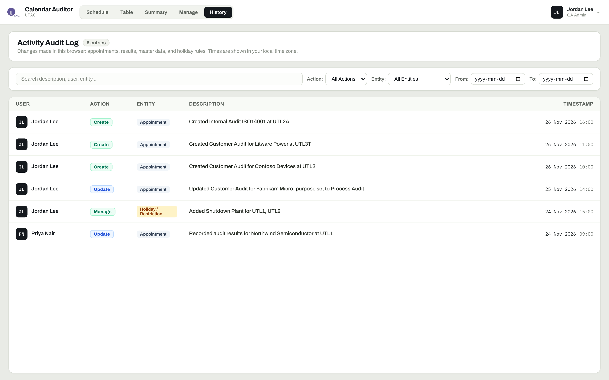

คู่มือผู้ใช้
วิธีวางแผน Customer Audit (CS) และ Internal Audit (IA) ใน UTAC QA Calendar (QMS-CASS) บันทึกผลตรวจ ดูแลข้อมูลหลัก และจัดทำรายงาน ส่วนแรกอธิบายว่าปฏิทินทำงานอย่างไร ส่วนที่สองเป็นขั้นตอนการทำงานแยกตามบทบาท
สารบัญ
- 1ก่อนเริ่มใช้งานเบราว์เซอร์ · เข้าสู่ระบบ · เมนูหลัก
- 2ปฏิทินทำงานอย่างไรไซต์ · สถานะของนัดหมาย · กฎของวัน · ฟิลด์ที่จำเป็น
- 3QA Planner: วางแผนการตรวจสร้าง Customer Audit (CS) · สร้าง Internal Audit (IA) · ค้นหา แก้ไข หรือลบนัดหมาย
- 4QMS Host: ตรวจตารางและบันทึกผลตรวจการตรวจที่ได้รับมอบหมาย · บันทึกผลตรวจ
- 5QA Admin: ดูแล QMS Host ตัวเลือก และวันหยุดQMS Host · ตัวเลือกในแบบฟอร์ม · วันหยุดและข้อจำกัด
- 6รายงาน: ค้นหา ส่งออก และดูประวัติTable และการส่งออก Excel · Summary · History
- 7ตรวจสอบก่อนจบวัน
- 8แก้ปัญหาเบื้องต้น
1ก่อนเริ่มใช้งาน
1.1เบราว์เซอร์
ใช้ Microsoft Edge (เบราว์เซอร์มาตรฐานของ UTAC) หรือ Google Chrome เวอร์ชันปัจจุบันในหน้าต่างปกติ
- หลีกเลี่ยงหน้าต่าง InPrivate หรือ Incognito เพราะการเข้าสู่ระบบจะหายเมื่อปิดหน้าต่าง
- อย่าตั้งค่าให้เบราว์เซอร์ล้าง cookies และข้อมูลเว็บไซต์เมื่อปิด มิฉะนั้นจะต้องเข้าสู่ระบบใหม่ทุกครั้ง
- อนุญาตการดาวน์โหลดจากแอป เพื่อบันทึกไฟล์ Excel (
.xlsx) ได้
1.2เข้าสู่ระบบ
- กรอก User ID และ Password แล้วเลือก Sign in ระบบจะเปิดหน้า Schedule ของเดือนปัจจุบัน
- เลือก Remember me on this device เพื่อคงการเข้าสู่ระบบได้นานสูงสุด 30 วัน หากไม่เลือก เซสชันจะหมดอายุภายใน 12 ชั่วโมง
- บัญชีใหม่: เลือก Sign up แล้วกรอกรหัสลงทะเบียน (registration code) ที่ผู้ดูแลระบบให้ พร้อม User ID และรหัสผ่าน หากไม่มีรหัสที่ถูกต้องจะสมัครไม่ได้
- เปลี่ยนรหัสผ่าน: เลือก Change password และกรอกรหัสผ่านปัจจุบันก่อน เมื่อเปลี่ยนแล้วทุกเซสชันของบัญชีจะสิ้นสุด ให้เข้าสู่ระบบใหม่ด้วยรหัสใหม่

1.3เมนูหลัก
แถบด้านบนมี 5 หน้า: Schedule (ปฏิทิน), Table (ค้นหารายการ), Summary (สรุปรายปี), Manage (QMS Host ตัวเลือก และวันหยุด) และ History (ประวัติการเปลี่ยนแปลง) เปิดเมนูใต้ชื่อผู้ใช้เพื่อไปที่ Your profile หรือ Sign out

2ปฏิทินทำงานอย่างไร
2.1ไซต์
ปฏิทินครอบคลุม 7 ไซต์ แต่ละไซต์มีสีประจำที่ใช้กับแถบด้านซ้ายของการ์ด ผู้ดูแลระบบเปลี่ยนสีได้ สีปัจจุบันดูได้ที่ Site Color Code ในแถบด้านข้างของหน้า Schedule
| ไซต์ | สีเริ่มต้น |
|---|---|
| UTL1 | #c0392b |
| UTL2 | #2e7d32 |
| UTL2A | #66bb6a |
| UTL2B | #1b5e20 |
| UTL3 | #1e5fa8 |
| UTL3A | #4a90d9 |
| UTL3T | #123f73 |
2.2สถานะของนัดหมาย
สีพื้นของการ์ดบอกสถานะ ระบบคำนวณสถานะให้เอง ผู้ใช้ไม่ต้องตั้งค่า
| สี | สถานะ | ความหมาย | สิ่งที่ต้องทำ |
|---|---|---|---|
| แดง | Incomplete Data | ฟิลด์ที่จำเป็นหรือช่วงวันที่ยังไม่ครบ | เปิดการ์ดและกรอกฟิลด์ที่ระบบแจ้ง |
| น้ำเงิน | Updated Data | ข้อมูลครบ และมีการแก้ไขภายใน 7 วัน | ตรวจว่าการแก้ไขถูกต้อง |
| ม่วง | New Data | ข้อมูลครบ และสร้างภายใน 7 วัน | ไม่ต้องทำอะไร เป็นนัดหมายใหม่ |
| อำพัน | Pending Result | ถึงวันตรวจแล้วแต่ยังไม่บันทึกผล | บันทึกผลตรวจ |
| เขียว | Complete Data | ข้อมูลครบและไม่มีงานค้าง | ไม่ต้องทำอะไร |
ระบบตรวจตามลำดับในตาราง: แดงก่อน แล้วน้ำเงิน ม่วง อำพัน และสุดท้ายเขียว ดังนั้นนัดหมายที่สร้างในสัปดาห์นี้แล้วถูกแก้ไข จะแสดงเป็นน้ำเงิน ไม่ใช่ม่วง

2.3กฎของวัน
ช่องวันบอกว่าวันนั้นรับการนัดหมายได้หรือไม่ ให้อ่านป้ายชื่อบนช่องวันทุกครั้ง
| ช่องวัน | กฎ | Customer Audit (CS) | Internal Audit (IA) |
|---|---|---|---|
| ขาว | วันทำงานปกติ | อนุญาต | อนุญาต |
| เทา | Public Holiday | ไม่อนุญาต | ไม่อนุญาต |
| น้ำเงิน | No Customer Audits | ไม่อนุญาต | อนุญาต |
| น้ำเงิน | Shutdown Plant | ไม่อนุญาต | อนุญาตเฉพาะไซต์ที่กฎไม่ได้ล็อก |
ระบบข้ามวันเสาร์-อาทิตย์ การนัดหมายหลายวันจะจองเฉพาะวันทำงาน กฎ Working Day ใช้เปลี่ยนวันหยุดในระบบให้กลับมาจองได้ กฎวันหยุดไม่ย้ายหรือลบนัดหมายที่มีอยู่แล้ว
2.4ฟิลด์ที่จำเป็น
| ประเภท | ฟิลด์ที่จำเป็น |
|---|---|
| Customer Audit (CS) | Standard, Site, Customer, End Customer, Purpose, Target Package, Customer Name, QMS Host และช่วงวันที่ที่ถูกต้อง |
| Internal Audit (IA) | Standard, Site, Audit Category, Area, QMS Host และช่วงวันที่ที่ถูกต้อง |
บันทึกนัดหมายได้แม้ยังกรอกไม่ครบ การ์ดจะเป็นสีแดง และแสดงในรายการ Incomplete Appointments ที่แถบด้านข้างจนกว่าจะกรอกครบ
3QA Planner: วางแผนการตรวจ
3.1สร้าง Customer Audit (CS)
- เปิด Schedule เลือก Month แล้วใช้ลูกศรไปยังเดือนที่ต้องวางแผน
- ตรวจช่องวัน
Public Holiday,No Customer AuditsและShutdown Plantไม่อนุญาต CS ทั้งหมด - เลือก New appointment หรือคลิกวันที่ แล้วเลือก Customer Audit
- กรอก 8 ฟิลด์ของ CS และกำหนด From และ To วันสิ้นสุดต้องไม่อยู่ก่อนวันเริ่ม
- เลือก Create appointment
- ตรวจว่าการ์ดอยู่ในวันและไซต์ที่ถูกต้อง หากเป็นสีแดง ให้เปิดการ์ดและกรอกฟิลด์ที่ขาด

ฟิลด์อย่าง Customer และ QMS Host เป็นรายการแบบค้นหาได้ พิมพ์เพื่อกรอง คลิกเพื่อเลือกได้หลายค่า และกด × เพื่อนำค่าออก

3.2สร้าง Internal Audit (IA)
- เลือกวันปกติ วัน
No Customer AuditsหรือวันShutdown Plantที่กฎไม่ได้ล็อกไซต์ของคุณ - เลือก New appointment หรือคลิกวันที่ แล้วเลือก Internal Audit
- กรอก 5 ฟิลด์ของ IA และช่วงวันที่ ในช่อง Area เลือกได้หลายค่าหรือพิมพ์เพื่อสร้างค่าใหม่ หลายค่าจะแสดงคั่นด้วย
/ - เลือก Create appointment แล้วตรวจการ์ด
3.3ค้นหา แก้ไข หรือลบนัดหมาย
- ใช้ตัวกรองที่แถบด้านข้าง: Audit Type, QMS Host, Standard, Site, Customer, Purpose, Target Package, Customer Name, Audit Category กด Clear all เพื่อล้างตัวกรอง ตัวกรองเปลี่ยนเฉพาะสิ่งที่แสดง ไม่ได้แก้ข้อมูล
- คลิกการ์ดเพื่อเปิด ใช้ไอคอนดินสอเพื่อแก้ไข หรือถังขยะเพื่อลบ
- นัดหมายหลายวันจะถามว่าให้แก้เฉพาะวันนั้นหรือทั้งชุด อ่านให้ดีก่อนยืนยัน
- เลือก Save changes แล้วตรวจวัน ไซต์ และสถานะอีกครั้ง

4QMS Host: ตรวจตารางและบันทึกผล
4.1ตรวจการตรวจที่ได้รับมอบหมาย
- เปิด Schedule แล้วกรองด้วยชื่อของคุณใน QMS Host และ Site
- ตรวจวันที่ ไซต์ ประเภทการตรวจ Standard และ Customer (CS) หรือ Area (IA)
- หากข้อมูลไม่ถูกต้อง ให้แจ้ง QA Planner แทนการแก้เองโดยไม่ได้รับอนุมัติ
- ก่อนตรวจ IA ในวัน
Shutdown Plantให้ยืนยันว่าไซต์ของคุณไม่ถูกล็อก
4.2บันทึกผลตรวจ
- เปิดนัดหมายแล้วเลือกไอคอน Audit Results
- กรอกจำนวน Major, Minor, OFI, OBS และ Findings ของแต่ละไซต์
- ตรวจตัวเลขและไซต์ แล้วเลือก Save Results ผลตรวจใช้กับทั้งชุดของนัดหมายหลายวัน
- ใช้ส่วน NOTES ในรายละเอียดของวันเพื่อบันทึกข้อมูลส่งต่อ
- หากการ์ดยังเป็นสีอำพัน แปลว่ายังมีงานค้าง ให้ติดตามต่อ
5QA Admin: ดูแล QMS Host ตัวเลือก และวันหยุด
5.1QMS Host
- เปิด Manage → QMS Host
- กรองด้วย Site, Standard หรือ Department เพื่อหาคนที่ต้องการ
- เลือก New QMS Host เพื่อเพิ่มคน หรือเปิดรายการเพื่อแก้ชื่อ บทบาท ไซต์ และแผนก ลากรายการเพื่อเปลี่ยนลำดับ
- ก่อนลบ ให้ตรวจว่าไม่มีการตรวจที่วางแผนไว้ที่ยังต้องใช้คนนั้น

5.2ตัวเลือกในแบบฟอร์ม
- เปิด Manage → Options แล้วเลือกกลุ่ม เช่น Standard, Customer, Purpose, Target Package หรือ Audit Category
- เพิ่ม ลบ (✕) หรือลากเพื่อเรียงลำดับ ตรวจตัวสะกดและค่าซ้ำก่อน
- การลบค่ามีผลกับการเลือกในอนาคตเท่านั้น นัดหมายเดิมยังคงค่าที่บันทึกไว้
5.3วันหยุดและข้อจำกัด
- เปิด Manage → Holidays เปลี่ยนปีด้วยลูกศร หรือพิมพ์ปี 4 หลักแล้วกด Enter
- คลิกวันที่ หรือเลือก Add Date Range Rule แล้วเลือกกฎ:
Public Holiday,No Customer AuditsหรือShutdown Plant - สำหรับ
Shutdown Plantให้เลือกไซต์ที่ต้องล็อกใน Affected Sites (Shutdown) ค่าเริ่มต้นไม่มีไซต์ถูกเลือก ใช้ Select All หากกระทบทุกไซต์ - ใส่ชื่อหรือหมายเหตุ ตรวจวันที่ กฎ และไซต์ แล้วเลือก Save Status
- เลือกการ์ด Public Holidays เพื่อดูวันหยุดของปีเรียงตามวันที่ ใช้ Reset to Normal Day เพื่อล้างกฎของวันนั้น

6รายงาน: ค้นหา ส่งออก และดูประวัติ
6.1Table และการส่งออก Excel
- เปิด Table ค้นหาด้วยข้อความ หรือกรองด้วย Audit Type, Sites, Standards, Categories, Packages, Customers, QMS Hosts และ From / To
- คลิกหัวคอลัมน์เพื่อเรียง คลิกซ้ำเพื่อกลับลำดับ Reset filters ล้างเงื่อนไขทั้งหมด
- ตรวจจำนวนผลลัพธ์ แล้วกดปุ่ม Excel เพื่อดาวน์โหลดแถวที่ผ่านตัวกรองเป็นไฟล์
.xlsx - เปิดไฟล์ ตรวจหัวคอลัมน์ จำนวนแถว และไซต์ตัวอย่างก่อนส่งต่อ

6.2Summary
เปิด Summary เพื่อดูยอดรวมของปี: จำนวนการตรวจ การเข้าตรวจของลูกค้าแยกตามไซต์และเดือน และผลตรวจแยกตามไซต์ เลือกปีด้วยลูกศรหรือช่องปี Export to Excel ดาวน์โหลดตาราง visits หรือ findings ของปีที่เลือก

6.3History
เปิด History เพื่อดูว่ามีอะไรเปลี่ยนแปลง กรองด้วยข้อความ Action, Entity และช่วงวันที่ เวลาแสดงตามเขตเวลาของเครื่อง ระบบบันทึกการเปลี่ยนนัดหมาย ผลตรวจ QMS Host ตัวเลือก และกฎวันหยุด หากพบสิ่งผิดปกติ ให้จดเวลาและรายการ แล้วติดต่อ QA Admin

7ตรวจสอบก่อนจบวัน
- QA Planner: ไม่มีการ์ดสีแดงค้าง นัดหมายใหม่และที่แก้ไขมีวันที่และผู้รับผิดชอบถูกต้อง
- QMS Host: บันทึกผลของการตรวจที่เสร็จแล้ว รายการที่ค้างมีผู้รับผิดชอบและวันติดตาม
- QA Admin: ตรวจคำขอแก้ข้อมูลหลักและกฎวันหยุดกับไซต์และวันที่ที่ถูกต้อง
- ผู้ทำรายงาน: ยืนยันตัวกรองและช่วงเวลาก่อนส่งไฟล์
- ทุกคน: Sign out เมื่อใช้เครื่องร่วมกัน
8แก้ปัญหาเบื้องต้น
| ปัญหา | สิ่งที่ต้องตรวจ |
|---|---|
| ไม่พบนัดหมาย | เดือนหรือปี มุมมอง (Week / Month / Year) และตัวกรอง ลองกด Clear all |
| การ์ดเป็นสีแดง | เปิดการ์ด ระบบจะแสดงฟิลด์ที่ขาด |
| จอง CS ไม่ได้ | มี Public Holiday, No Customer Audits หรือ Shutdown Plant ในช่วงวันที่ที่เลือก |
| จอง IA ไม่ได้ | เป็น Public Holiday หรือไซต์ของคุณถูกล็อกโดย Shutdown Plant |
| ข้อมูลหายหลังรีเฟรช | อ่านข้อความแจ้งเตือนและตรวจการเชื่อมต่อ แจ้งผู้ดูแลก่อนบันทึกซ้ำ |
| ไฟล์ส่งออกไม่ตรง | ตัวกรอง ช่วงวันที่ ปี และจำนวนผลลัพธ์ |
| ต้องเข้าสู่ระบบใหม่ทุกครั้งที่เปิดเบราว์เซอร์ | ใช้ InPrivate/Incognito หรือเบราว์เซอร์ล้างข้อมูลเว็บไซต์เมื่อปิด |
| เข้าสู่ระบบหรือสมัครไม่ได้ | ตรวจ User ID และรหัสผ่าน หรือขอ registration code / ความช่วยเหลือจากผู้ดูแลระบบ |
เมื่อแจ้งปัญหา ให้ระบุหน้า เวลา ไซต์ และขั้นตอนที่ทำ และลบข้อมูลลูกค้าออกจากภาพหน้าจอ